Pas un lieu.
Une experience qui devient un souvenir.
La mer est toujours là. Cinq espaces, découverts l’un après l’autre. Un lieu vertical, où chaque niveau révèle quelque chose de nouveau. Votre mariage sera unique — non parce que nous le promettons, mais parce qu’il ne peut en être autrement.
Le Salento est bien plus
qu’une destination
Imaginez célébrer votre mariage dans un lieu face à la mer dans le Salento, là où le bleu de l’Adriatique rencontre l’histoire et l’authenticité des Pouilles.
Cala dei Balcani, à Santa Cesarea Terme, est un lieu de mariage face à la mer dans les Pouilles, niché dans la nature méditerranéenne, entre murets de pierre sèche, une tour sarrasine historique du XVIe siècle, une pinède et des terrasses surplombant la mer limpide.
Chaque espace raconte l’essence du Salento : des salles en pierre aux voûtes caractéristiques, des parfums méditerranéens, des panoramas à couper le souffle et une cuisine qui met en valeur les saveurs et les produits du territoire.
Un cadre exclusif pour qui rêve d’un mariage authentique et raffiné dans le Salento, mais aussi pour les couples qui vivent loin et souhaitent organiser un mariage de destination dans les Pouilles avec la mer pour protagoniste.
De la cérémonie à la réception, chaque moment peut se vivre dans un décor différent, menant les mariés et leurs invités à la découverte du lieu et de la beauté du territoire.
Cala dei Balcani n’est pas simplement un lieu de mariage : c’est une expérience au cœur du Salento, suspendue entre histoire, nature et mer.


Un mariage qui devient des vacances
Votre mariage peut devenir une expérience à partager avant et après le grand jour. Le Salento vous offre un programme inépuisable :
- ✓ Chemin du Salento — sentiers nature parmi les oliviers et les figuiers de Barbarie
- ✓ Mer et excursions — grottes marines, criques cachées, fonds cristallins
- ✓ Détente — rythmes lents, longs couchers de soleil, air iodé
- ✓ Saveurs et dégustations — huile d’olive, vins primitivo et negroamaro, pasticciotti
- ✓ Otrante, Lecce, Castro — villages historiques à quelques minutes
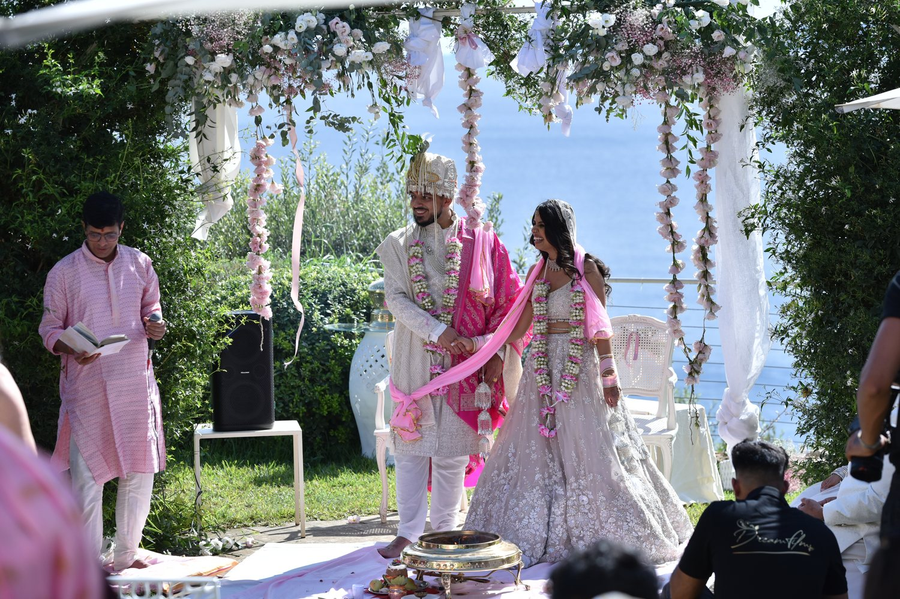
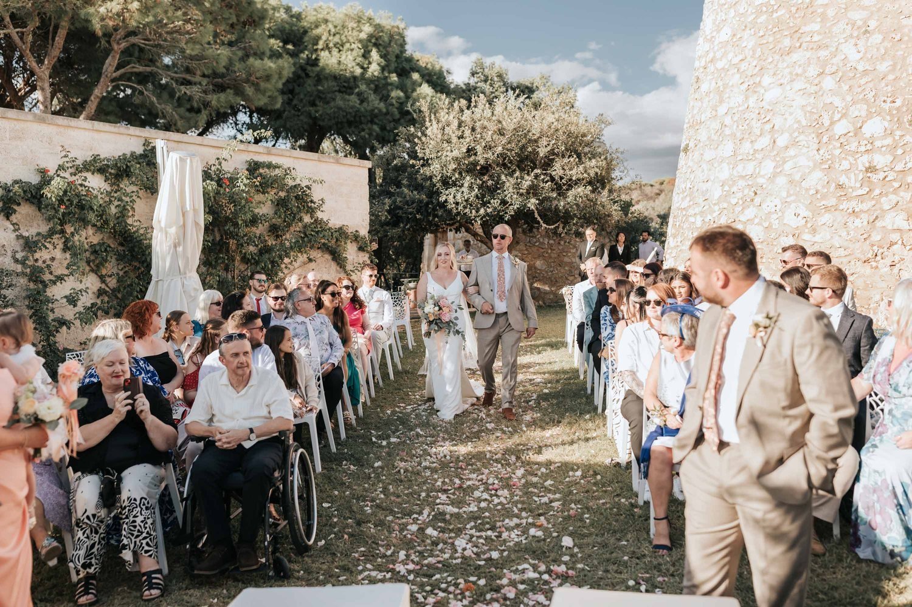
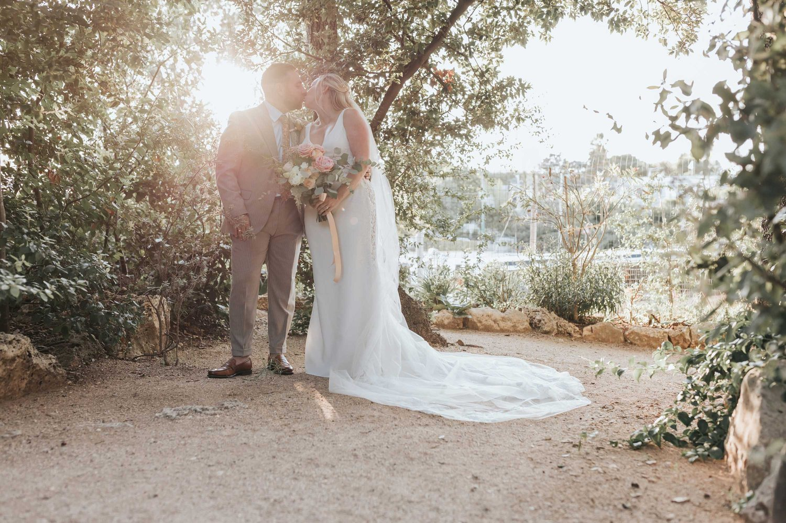
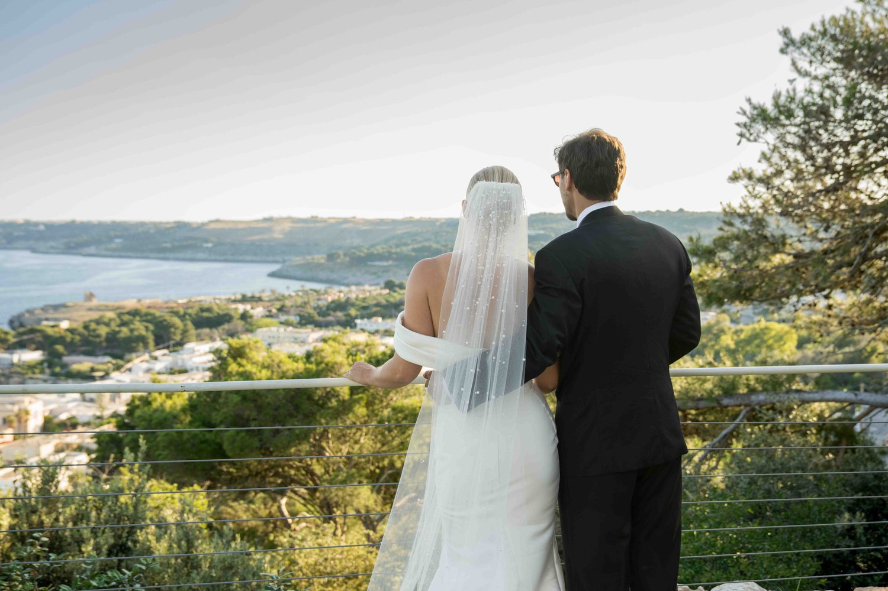
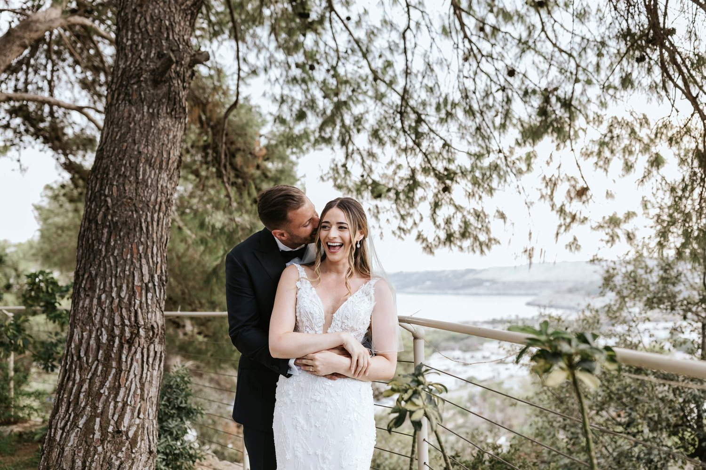


Tout ce dont vous avez besoin,
au meme endroit
Réseau de prestataires locaux
Photographes, fleuristes, graphistes et décorateurs locaux, coordonnés par nos soins. Quand on organise depuis l’étranger, c’est essentiel.
Cuisine internationale et salentine
Des menus sur mesure, avec une attention particulière aux intolérances. Les invités étrangers sont conquis par la cuisine locale.
Équipe multilingue
Une communication fluide avec les mariés et les invités étrangers. Un accompagnement avant, pendant et après le grand jour.
Cérémonie civile officielle
Cala dei Balcani est un lieu officiel de célébration civile. Mariez-vous légalement face à la mer, au cœur du Salento.
Exclusivité totale
Un seul événement par jour. Le domaine est entièrement à vous. Aucun autre mariage, aucun inconnu.
La mer, toujours présente
Cinq espaces, cinq points de vue sur l’Adriatique. Un parcours qui se découvre niveau après niveau.
Mariage intime dans les Pouilles : une célébration face à la mer dans le Salento
Un lieu exclusif pour les mariages intimes et les mariages de destination dans les Pouilles.
Vous rêvez d’un mariage intime dans les Pouilles, entourés de ceux que vous aimez, avec la mer du Salento en toile de fond ? Cala dei Balcani, à Santa Cesarea Terme, est un lieu de mariage face à la mer pensé pour les petites réceptions, les mariages intimes et les mariages de destination, dans une atmosphère authentique, élégante et chaleureuse.
Surplombant l’Adriatique, Cala dei Balcani propose plusieurs espaces nichés dans la nature méditerranéenne : terrasses face à la mer, pinède, pierre du Salento et une tour sarrasine historique du XVIe siècle.
Un mariage avec peu d’invités permet de vivre chaque moment plus intensément, en consacrant du temps à ceux que vous avez choisi d’avoir à vos côtés.
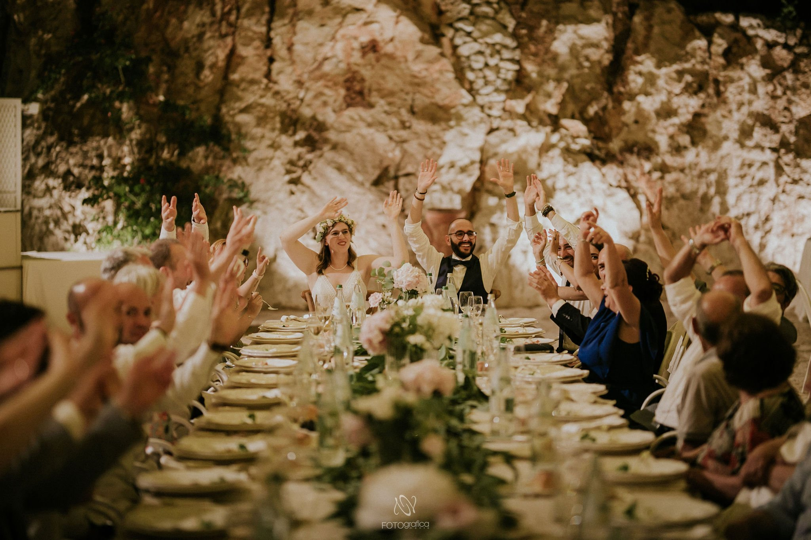
Les espaces de Cala dei Balcani permettent une réception intime sans renoncer à la beauté et à l’exclusivité d’un grand lieu de mariage du Salento. De la cérémonie symbolique face à la mer à l’apéritif, du dîner sous les étoiles à la fête, chaque moment se personnalise selon votre style.
Une cuisine ancrée dans la tradition des Pouilles, des produits du terroir et le soin du détail complètent une expérience conçue pour faire découvrir aux mariés et à leurs invités le Salento le plus authentique.
Pour les couples italiens et étrangers qui souhaitent se marier en Italie, Cala dei Balcani est un cadre idéal pour un mariage de destination dans les Pouilles ou un mariage intime dans le Salento, avec le charme d’un lieu face à la mer.
Santa Cesarea Terme, sur la côte adriatique du Salento, offre un décor unique pour un mariage qui réunit mer, nature, histoire et tradition des Pouilles.
Cala dei Balcani est le lieu de ceux qui rêvent d’un mariage intime face à la mer dans les Pouilles : peu d’invités, de grandes émotions et toute la beauté du Salento.
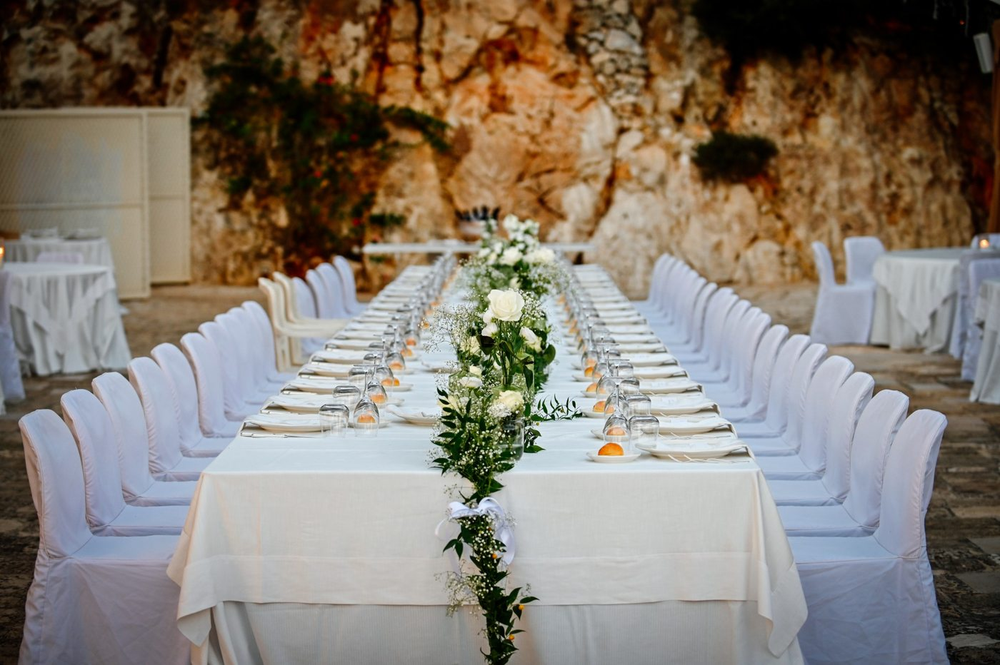
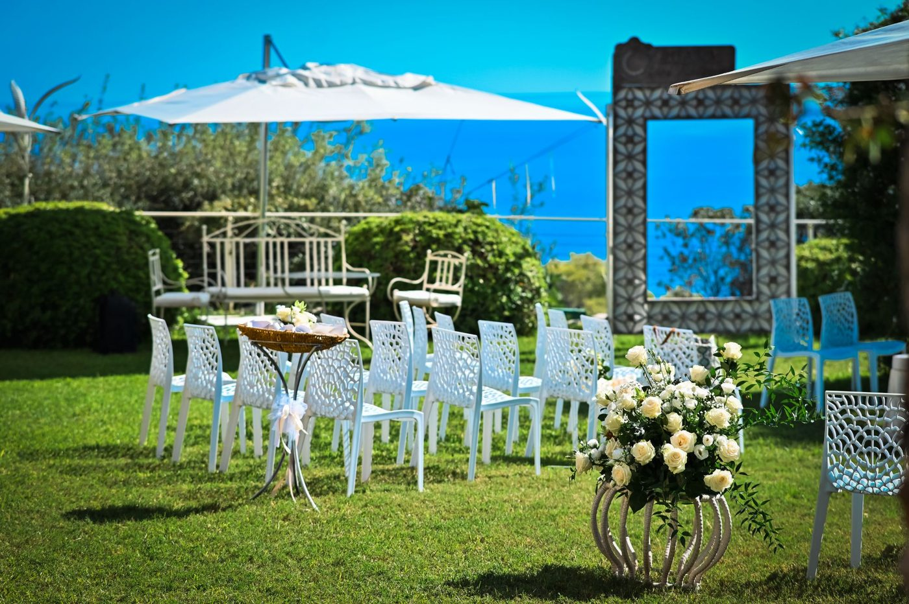
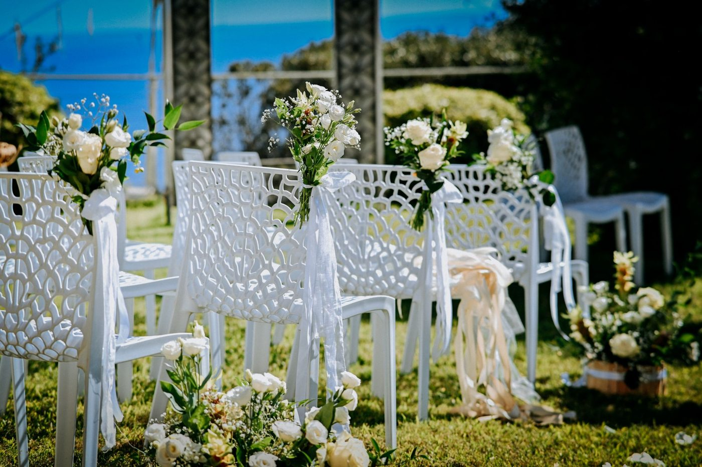
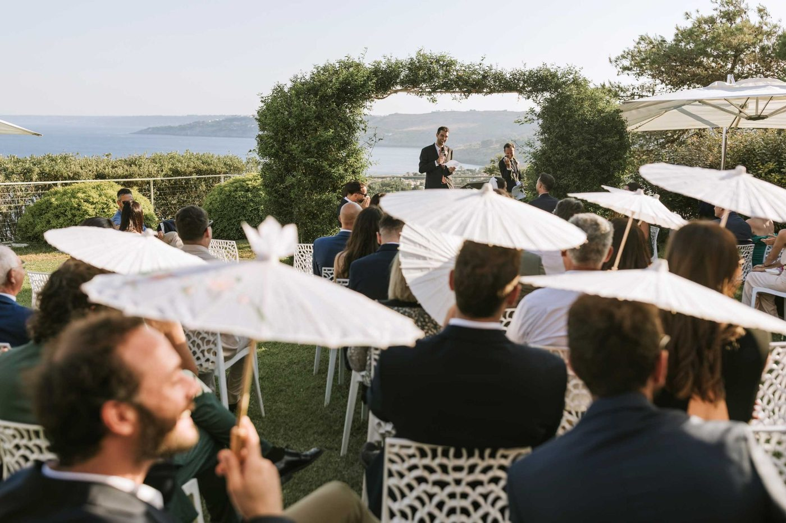
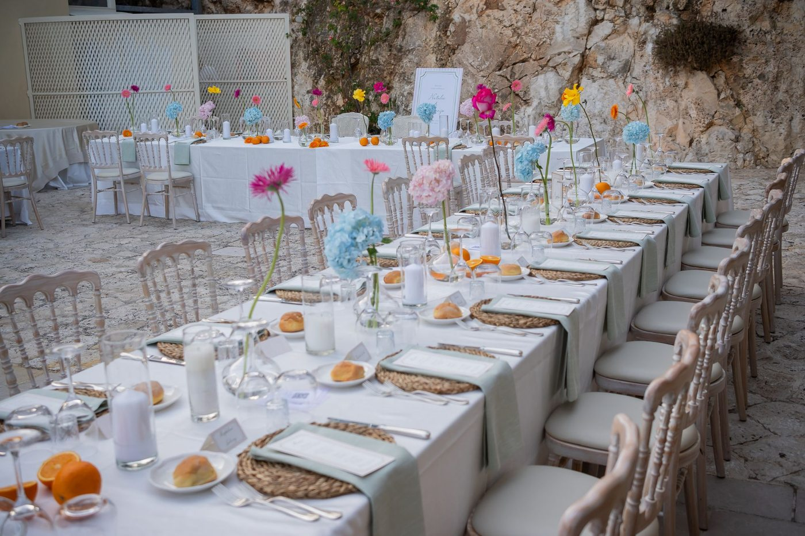
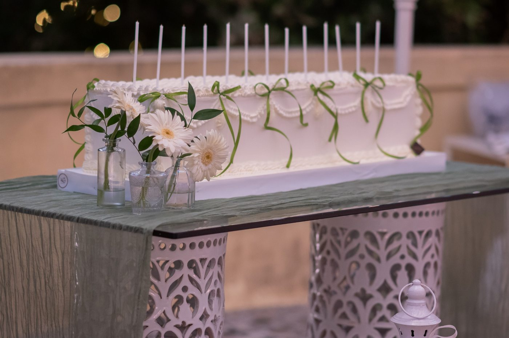
« Cala dei Balcani est le choix parfait pour réunir deux cultures dans un même décor magique. Nos invités ont qualifié notre mariage d’‘amusant et plein d’énergie’ — grâce à la patience et au professionnalisme de Francesco et de toute l’équipe. »— Vanessa et Omar, couple international
Mariages internationaux : questions fréquentes
Pourquoi choisir le Salento, dans les Pouilles, pour un mariage international ?
Le Salento offre des paysages uniques, des plages magnifiques, des traditions vivantes et une cuisine réputée, complétés par des infrastructures et des services à la hauteur des visiteurs internationaux. C’est une immersion totale dans la culture des Pouilles, idéale pour un mariage de rêve et des vacances inoubliables.
Votre lieu à Santa Cesarea Terme fait-il aussi office de mairie pour les cérémonies civiles ?
Oui. Les cérémonies civiles peuvent avoir lieu ici, ce qui permet aux couples de se marier légalement dans un cadre authentique sans avoir à se déplacer, et simplifie d’autant les démarches administratives.
Un couple étranger peut-il se marier dans le Salento sans complications juridiques ?
Bien sûr. Nous travaillons avec des spécialistes qui gèrent toutes les démarches juridiques internationales. Nous vous aidons à obtenir les documents, les traductions officielles et les autorisations, et nous vous accompagnons à chaque étape pour garantir la conformité aux règles italiennes et internationales.
Disposez-vous d’un wedding planner interne ?
Oui. Un wedding planner professionnel dédié vous accompagne à chaque étape : choix des prestataires, décorations, traditions locales à intégrer, jusqu’à la personnalisation de votre journée. Il coordonne chaque détail.
Quels sont les principaux services proposés par votre lieu de réception dans le Salento ?
- Cérémonies civiles ou symboliques, y compris celles célébrées dans la salle officielle sur place
- L’accompagnement d’un wedding planner professionnel
- Des espaces de réception exceptionnels, en intérieur comme en extérieur
- Un service traiteur proposant cuisine locale et internationale, tenant compte des allergies et des régimes particuliers
- Des hébergements de luxe et des forfaits touristiques pour les invités étrangers
- Des décorations sur mesure et des mises en scène thématiques
- Un soutien logistique et administratif international
- Services de photographie, vidéo et animation
Comment se déroule une cérémonie de mariage dans le Salento ?
Vous pouvez choisir une cérémonie civile dans notre salle officielle, une cérémonie religieuse dans une église historique, ou une cérémonie symbolique dans des lieux d’exception.
Comment sont organisés les hébergements pour les invités étrangers ?
Nous travaillons avec des hôtels, des villas et des agritourismes à Santa Cesarea Terme, avec des forfaits personnalisés et des transferts. Nous organisons aussi des visites et des excursions sur mesure autour du patrimoine naturel et culturel du Salento.
Le lieu est-il facile d’accès et proposez-vous un service de transport ?
Le lieu se trouve à environ 200 km de Bari, 80 km de Brindisi et 40 km de la gare de Lecce. Nous organisons transferts privés, navettes et forfaits pour faciliter votre voyage.
Y a-t-il sur place du personnel parlant anglais, français ou allemand ?
Oui, notre équipe peut vous accompagner en anglais, en français ou en allemand.
Aurons-nous un interlocuteur unique multilingue (wedding planner) du début à la fin, malgré la distance et la langue ?
Absolument. Notre promesse, c’est zéro stress : un wedding planner multilingue (anglais, français ou allemand) vous est attribué et mène l’organisation avec vous. Grâce à des visioconférences régulières et à une communication fluide, chaque détail est traité avec sérieux, même à des milliers de kilomètres.
Comment garantissez-vous la sécurité et la discrétion pendant la cérémonie ?
Le domaine offre des espaces privatifs, un personnel qualifié et le respect des normes de sécurité. Préserver l’intimité des mariés et de leurs invités dans un cadre exclusif est notre priorité.
Comment organisez-vous le service traiteur ?
Nous proposons un menu varié : plats traditionnels du Salento, spécialités internationales et menus dédiés aux allergies ou aux régimes particuliers. Notre cuisine met en avant le poisson frais, les produits locaux, les vins régionaux et les desserts artisanaux.
Le lieu peut-il accueillir des événements avant et après le mariage ?
Oui. Nous organisons brunchs, dîners de répétition et dîners d’après-cérémonie, pour que tout le séjour fasse partie de la fête.
Quels sont les coûts approximatifs et comment établissez-vous un devis ?
Le prix dépend de la saison, de la taille de l’événement, des services supplémentaires et des personnalisations. Les devis sont transparents, sans surprise : le tarif de départ est d’environ 130 € par personne, pour des événements d’une centaine d’invités.
Organisez-vous des mariages de moins de 100 invités ?
Bien sûr. Nous avons toujours célébré des mariages de 30, 40, 50 ou 60 personnes, en tout cas de moins de 100 invités : nous les appelons mariages intimes et nous croyons sincèrement à ces célébrations plus réduites et plus privées.
Peut-on organiser un mariage écologique dans le Salento ?
Oui. Nous proposons des services éco-compatibles, une restauration biologique, des matériaux durables et des décorations naturelles, dans une logique de tourisme responsable.
Proposez-vous des services de coiffure et de maquillage sur place ?
Oui. Nous travaillons avec des professionnels qui se déplacent sur le lieu de l’événement ou à l’hôtel pour la coiffure, le maquillage et le stylisme : vous n’avez pas à bouger.
Quelles sont les tendances émergentes pour les mariages dans le Salento ?
Des cérémonies bohème chic, des cérémonies civiles en plein air aux décors minimalistes, des menus à base de produits locaux et des mariages « expérientiels » inspirés de la culture et des traditions des Pouilles.
Comment intégrer des éléments culturels et traditionnels à notre mariage ?
Avec notre wedding planner, vous pouvez intégrer musique, danse, rituels locaux, spécialités culinaires et vins, pour un événement authentique dont vos invités étrangers se souviendront.
Les animaux de compagnie sont-ils acceptés ?
Oui, le lieu accepte les animaux : vos compagnons à quatre pattes peuvent faire partie de la journée. Nous pouvons organiser des cérémonies pet-friendly, avec des espaces et des attentions dédiés à leur bien-être.
Où se trouve exactement le lieu de réception et pourquoi sa position est-elle si stratégique ?
Nous sommes à Santa Cesarea Terme, connue pour ses thermes, ses sources naturelles et ses merveilles côtières. Sa position permet un accès facile aux aéroports de Bari, Brindisi et Lecce, et un accès direct aux plages, aux parcs naturels et aux sites touristiques réputés. C’est donc le point de départ idéal pour associer mariage et vacances dans le Salento.
Quelle image Santa Cesarea Terme offre-t-elle aux visiteurs étrangers ?
Santa Cesarea Terme est une destination reconnue, dotée de bonnes infrastructures, de services de transfert et d’une large offre d’activités : thermes, sources naturelles, restaurants, excursions en bateau et un centre historique plein de caractère. Confort, détente et authenticité : ce que viennent chercher les visiteurs du monde entier.
Peut-on organiser un mariage tout compris à Santa Cesarea Terme ?
Bien sûr. Notre expérience nous permet de tout organiser rapidement et sans stress, en fonction des besoins réels des couples étrangers.
Le lieu est-il disponible toute l’année ?
Oui, nous sommes ouverts toute l’année. Les mariages fonctionnent ici en été comme en automne ou en hiver : le cadre reste élégant et confortable en toute saison.
Quel temps fait-il à Santa Cesarea Terme et quelles solutions proposez-vous en cas de mauvais temps (plan B) ?
Les Pouilles bénéficient d’un climat méditerranéen idéal pour les mariages, avec de longues journées ensoleillées. Nous gardons néanmoins un plan B en intérieur, capable d’accueillir tout l’événement avec confort et élégance, sans rien perdre de la magie du jour.
Y a-t-il des coûts cachés ou des frais supplémentaires en plus du prix du mariage ?
Aucun. Nous appliquons une transparence financière totale. Vous recevez un devis détaillé couvrant chaque service choisi : rien n’est caché. Tout coût supplémentaire est documenté et soumis à votre accord préalable, pour que vous gardiez la main à chaque étape.
Quelle est la philosophie culinaire de Cala dei Balcani ?
Notre philosophie célèbre les traditions culinaires et viticoles des Pouilles et du Salento, avec des ingrédients d’une fraîcheur irréprochable. Nous sommes très souples pour intégrer des plats internationaux et adapter les menus (végan, halal, casher), et nous prêtons une grande attention aux intolérances et aux allergies, afin que chaque invité mange en sécurité et avec plaisir.
Commencez à planifier votre mariage
Racontez-nous votre projet. Nous répondons sous 24 heures avec toutes les informations utiles.